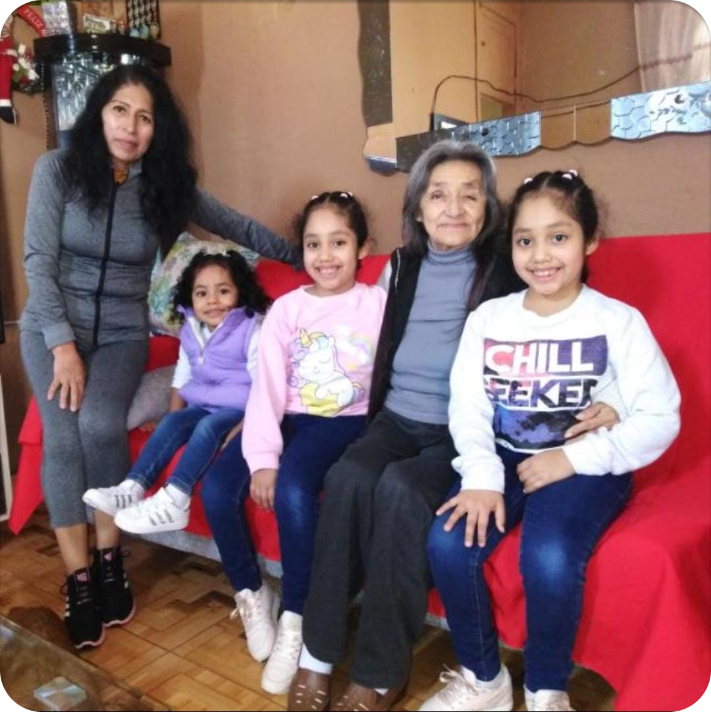

Acerca de mÃ
Hola 😁
Soy Gerardo Castro, y solo tengo palabras de agradecimiento hacia tÃ, por darte el tiempo de visitar mi página web, aquà encontrarás todo tipo de contenido como video series, tutoriales, blogs, podcast y muchÃsimas otras formas con el objetivo de evangelizar todo lo relacionado a Seguridad en AWS
Pero…¿Quién soy?
No voy a mencionar acerca de mis “laureles”, eso es secundario (de hecho, eso no importa). Sino, contarte un poco de mÃ. Soy padre de 3 niñas que son, junto a mi madre y mi abuelita, los ğŸŒes que iluminan mi dÃa a dÃa y me dan esa 💪 para ir a por todo lo que me proponga 🔥.
Cada logro conseguido, es siempre dedicado a ellas 👵👩‍🦱👨‍👧‍👧👶:

Ahora, ¿Cómo es que llegue aqu�
Mi historia en cloud computing, mejor aún, usando Amazon Web Services, fue un respuesta de parte de Dios. No tengo un tÃtulo universitario (por ahora), sin embargo siempre trate de aprender de manera empÃrica y como autodidacta todo lo que podÃa. TenÃa alrededor de 6 años siendo soporte técnico y obviamente existe un rango salarial y su tope era demasiado bajo (al menos aquà en Perú, sà 🙄). Y cada vez que aprendÃa algo nuevo, buscaba ejercerlo, pero condiciones como el no tener un tÃtulo universitario o el no estar certificado en esa tecnologÃa, me restaban el 100% de las opciones para competir frente a otros buenos candidatos.
Entonces, un dÃa, recuerdo que habia pasado por varios cursos gratuitos que encontraba en internet, para ser especialista de redes, o administrador de servidores, o de base de datos, etc… Y solo me quedaba aprender a programar, y empecé a aprender desarrollo web en EDteam (curiosamente, hoy dicto cursos de AWS junto a ellos ❤).
Recuerdo que para entonces ya tenÃa familia, seguÃa con el mismo puesto/salario y empezaba a desesperarme 😫😒😅.
Hasta que un dÃa, buscando donde alojar mi primer sitio web, me tope con un tutorial en youtube de “Crea tu primera instancia EC2 para alojar tu sitio web”, la verdad no recuerdo quién fue el autor o canal (espero encontrarlo y poder invitarlo a mi canal 😠para alguna colaboración juntos)
Aún no era conciente de lo que significaba la palabra “AWS” en el mundo de la tecnolgÃa. Y EDteam, lanzó su primer curso de “AWS desde cero”, que ni corto ni perezoso, completé.
Dos meses después, alguien, de mi centro de labores de aquel entonces, me escribió por WhatsApp y me dijo: “Estoy reclutando una persona para mi equipo de Arquitectos AWS, me gustarÃa que puedas unirte, ¿que te parece la idea?".
Con lágrimas en los ojos, le dije que ¡SI!, tuve sentimientos encontrados 🙃, ¡era la oportunidad que esperaba en mi perfil profesional!. Para este entonces, ya entendÃa mejor, el impacto que tiene AWS en el mundo de la tecnologÃa asà como en el perfil profesional de una persona.
Tiempo después, conseguà alcanzar muchos objetivos, cumplir metas, pero la mas importante de todas fue la de ayudar, a que otras personas puedan conseguir ese impacto que pude conseguir a través de la educación.
Desde el 2020, he participado brindando charlas, meetups, conferencias y más evangelizando #AWSParaTodos y desde entonces, no me he detenido.
Ayúdame a llegar a mas personas, compartiendo mis redes sociales, sobre todo, este sitio web que centraliza todo mi contenido.
Un 👋 desde Perú.